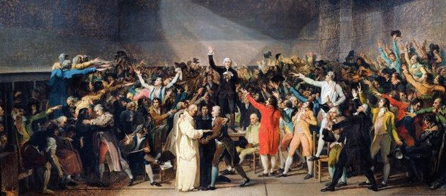
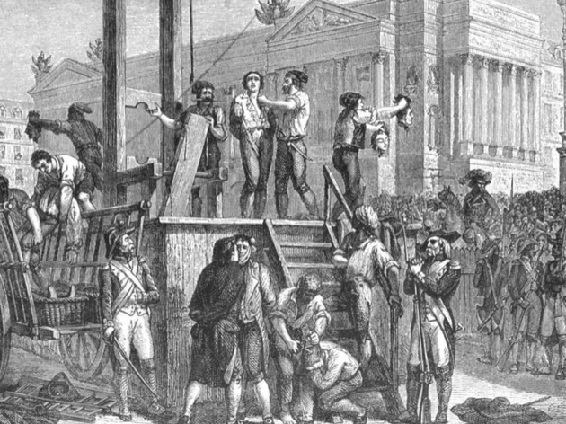
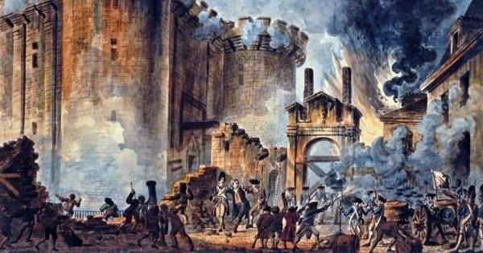
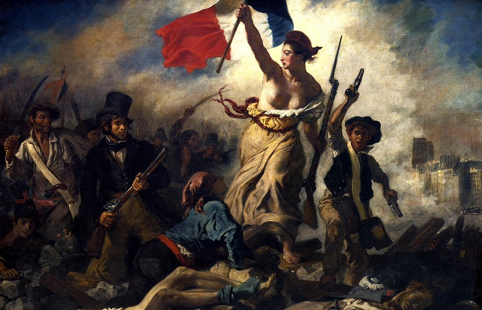

A Revolução Francesa, iniciada no dia 17 de junho de 1789, foi um movimento impulsionado pela burguesia e que contou com uma importante participação dos camponeses e das massas urbanas que viviam na miséria.
Em 14 de julho de 1789, a massa urbana de Paris tomou a prisão da Bastilha desencadeando profundas mudanças no governo francês.
No final do século XVIII, a França era um país agrário, com a produção estruturada no modelo feudal. Para a burguesia e parte da nobreza era preciso acabar com o poder absoluto do rei Luís XVI, cujo reinado teria arruinado a economia francesa.
Enquanto isso, do outro lado do Canal da Mancha, a Inglaterra, sua rival, desenvolvia o processo de Revolução Industrial.
Fases da Revolução Francesa
Para fins de estudo dividimos a Revolução Francesa em três fases:
• Primeira fase (1789-1792): Monarquia Constitucional;
• Segunda fase (1792-1794): Convenção - 1792/1793 e Terror;
• Terceira fase (1794-1799): Diretório.
A burguesia francesa, preocupada em desenvolver a indústria no país, tinha como objetivo destruir as barreiras que restringiam a liberdade de comércio internacional. Desta forma, era preciso que se adotasse na França, segundo a burguesia, o liberalismo econômico.
A burguesia exigia também a garantia de seus direitos políticos, pois era ela quem sustentava o Estado, posto que o clero e a nobreza estavam livres de pagar impostos.
Apesar de ser a classe social economicamente dominante, sua posição política e jurídica era limitada em relação ao Primeiro e ao Segundo Estados.
Iluminismo
O iluminismo surgiu na França, se propagou entre os burgueses e propulsionou o início da Revolução Francesa.
Este movimento intelectual destinava duras críticas às práticas econômicas mercantilistas, ao absolutismo, e aos direitos concedidos ao clero.
Seus autores mais conhecidos foram Voltaire, Montesquieu, Rousseau, Diderot e Adam Smith.
Crise Econômica e Política
A crítica situação econômica, às vésperas da revolução de 1789, exigia reformas urgentes e gerava uma grave crise política. Ocorreu uma onda de falências, acompanhada de desempregos e queda de salários, arruinando o comércio nacional.
As crises econômicas se juntaram às políticas, com demissão de ministros que haviam convocado a nobreza e o clero para contribuírem no pagamento de impostos.
Pressionado pela crise, o rei Luís XVI convoca os Estados Gerais, uma assembleia formada pelas três divisões da sociedade francesa:
• Primeiro Estado - composto pelo clero;
• Segundo Estado - formado pela nobreza;
• Terceiro Estado - composto por todos aqueles que não pertenciam ao Primeiro nem ao Segundo Estado, no qual se destacava a burguesia.
O Terceiro Estado, mais numeroso, pressionava para que as votações das leis fossem individuais e não por Estado. Somente assim, o Terceiro Estado poderia passar normas que os favorecessem.
No entanto, o Primeiro e o Segundo Estado recusaram esta proposta e as votações continuaram a ser realizadas por Estado.
Desta forma, reunidos no Palácio de Versalhes, o Terceiro Estado e parte do Primeiro Estado (baixo clero) se separam da Assembleia.
Em seguida, declaram-se representantes da nação, formando a Assembleia Nacional Constituinte e jurando permanecer reunidos até que ficasse pronta a Constituição.

"O juramento na Sala de Jogo de Paume", de Jean-Louis David, ilustra a união entre parte do Segundo Estado e o Terceiro.
No dia 26 de agosto de 1789 foi aprovada pela Assembleia a Declaração dos Direitos do Homem e do Cidadão.
Esta Declaração assegurava os princípios da liberdade, da igualdade, da fraternidade (“Liberté, égalité, fraternité” - lema da Revolução), além do direito à propriedade.
A recusa do rei Luís XVI em aprovar a Declaração provoca novas manifestações populares. Os bens do clero foram confiscados e muitos padres e nobres fugiram para outros países. A instabilidade na França era grande.
A Constituição ficou pronta em setembro de 1791. Dentre os muitos artigos podemos destacar:
• o governo foi transformado em monarquia constitucional;
• o poder executivo caberia ao rei, limitado pelo legislativo, constituído pela Assembleia;
• os deputados teriam mandato de dois anos;
• o voto não teria caráter universal: só seria eleitor quem tivesse uma renda mínima (voto censitário);
• suprimiu-se os privilégios e as antigas ordens sociais;
• confirmou-se a abolição da servidão e a nacionalização dos bens eclesiásticos;
• manteve-se a escravidão nas colônias.
Internamente, a crise começava a provocar divisão entre os próprios revolucionários.
Os girondinos - representantes da alta burguesia, defendiam posições moderadas.
Por sua parte, os jacobinos - representantes da média e da pequena burguesia, constituía o partido mais radical, sob a liderança de Maximilien Robespierre.
Foi assim instalada a ditadura jacobina que introduziu novidades na Constituição como:
• Voto universal e não censitário;
• fim da escravidão na colônias;
• congelamento de preços de produtos básicos como o trigo;
• instituição do Tribunal Revolucionário para julgar os inimigos da Revolução.
Nessa altura, foram ordenadas a morte, pela guilhotina, de várias pessoas que eram contra a revolução. As execuções tornaram-se um espetáculo popular, pois aconteciam diversas vezes ao dia num ato público.
O próprio rei Luís XVI foi morto desta forma em 1793. Meses depois a rainha Maria Antonieta também foi guilhotinada. Essa fase, entre 1793 e 1794, é conhecida como “O Terror”.
A Lei dos Suspeitos aprovava a prisão e a morte cruel dos anti revolucionários. Nessa mesma altura, as igrejas eram encerradas e os religiosos obrigados a deixar seus conventos. Aqueles que recusavam eram executados. Além da guilhotina, os suspeitos eram afogados no rio Loire.
Para os ditadores, essas execuções eram uma forma justa de acabar com os inimigos. Essa atitude causava terror na população francesa que se voltou contra Robespierre e o acusou de tirania.
Nessa sequência, após ser detido, também Robespierre foi executado na ocasião que ficou conhecida como “Golpe do 9 Termidor”, em 1794.

Gravura do século XIX mostrando a execução de Robespierre
A fase do Diretório dura cinco anos de 1794-1799 e se caracteriza pela ascensão da alta burguesia, os girondinos, ao poder. Recebe este nome, pois eram cinco diretores que governavam a França neste momento.
Inimigos dos jacobinos, seu primeiro ato é revogar todas as medidas que eles haviam feito durante sua legislação.
No entanto, a situação era delicada. Os girondinos atraíram a antipatia da população ao revogar o congelamento de preços, por exemplo.
Vários países europeus como a Inglaterra e o Império Austríaco ameaçavam invadir a França a fim de conter os ideais revolucionários. Por fim, a própria nobreza e a família real no exílio, buscavam organizar-se para restaurar o trono.
Diante desta situação, o Diretório recorre ao Exército, na figura do jovem e brilhante general Napoleão Bonaparte para conter os ânimos dos inimigos.
Desta maneira, Bonaparte dá um golpe - o 18 Brumário - onde instaura o Consulado, um governo mais centralizado que traria paz ao país por alguns anos.
Em dez anos, de 1789 a 1799, a França passou por profundas modificações políticas, sociais e econômicas.
A aristocracia do Antigo Regime perdeu seus privilégios, libertando os camponeses do antigos laços que os prendiam aos nobres e ao clero.
Desapareceram as amarras feudais que limitavam as atividades da burguesia, e criou-se um mercado de dimensão nacional.
A Revolução Francesa foi a alavanca que levou a França do estágio feudal para o capitalista e mostrou que a população era capaz de condenar um rei.
Igualmente, instalou a separação de poderes e a Constituição, uma herança deixada para várias nações do mundo.
Em 1799, a alta burguesia aliou-se ao general Napoleão Bonaparte, que foi convidado a fazer parte do governo.
Sua missão era recuperar a ordem e a estabilidade do país, proteger a riqueza da burguesia e salvá-los das manifestações populares.
Por volta de 1803 têm início as Guerras Napoleônicas, conflitos revolucionários imbuídos dos ideais da Revolução Francesa que teve como protagonista Napoleão Bonaparte.

A Queda da Bastilha

“A liberdade guiando o povo”, pintura de Eugène Delacroix